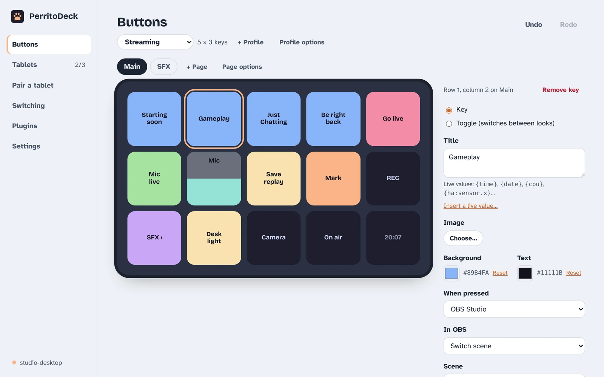
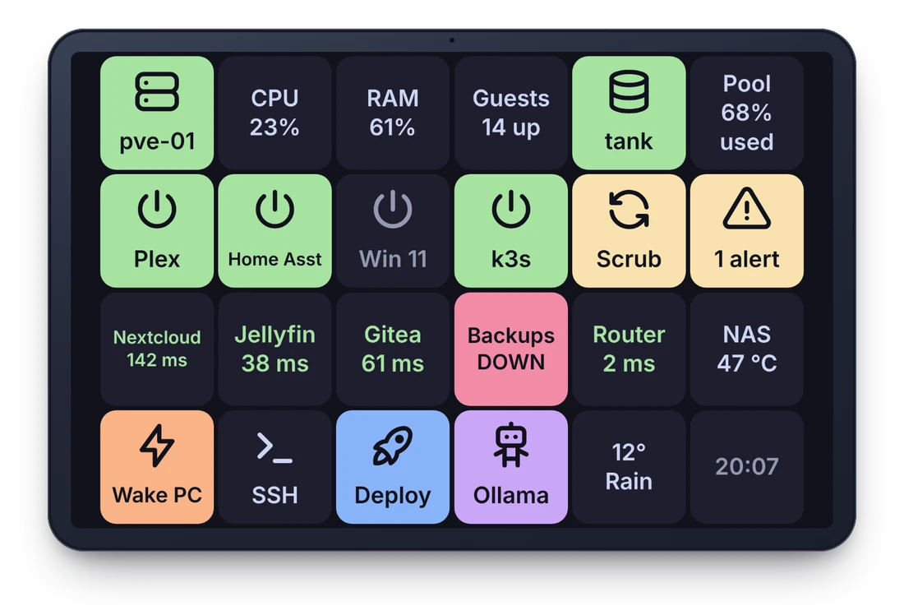
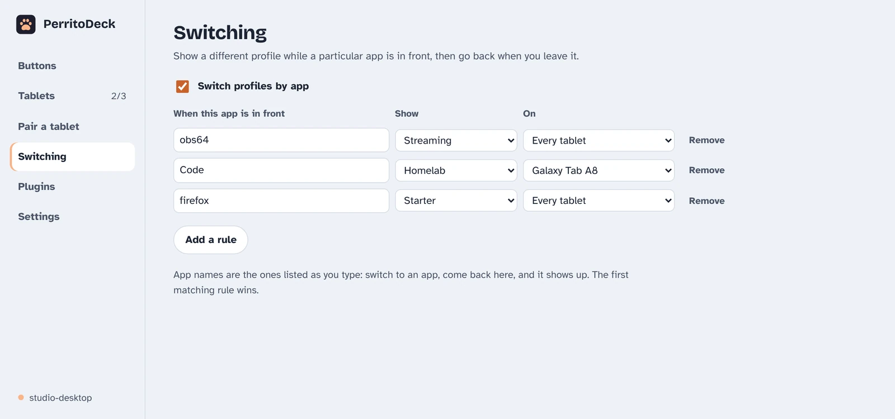
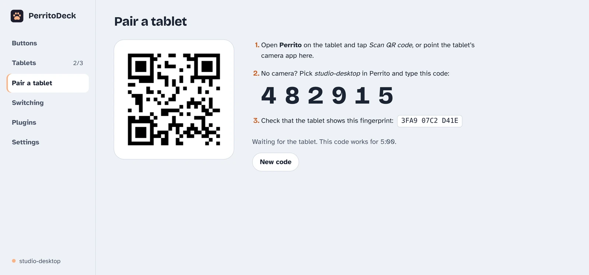
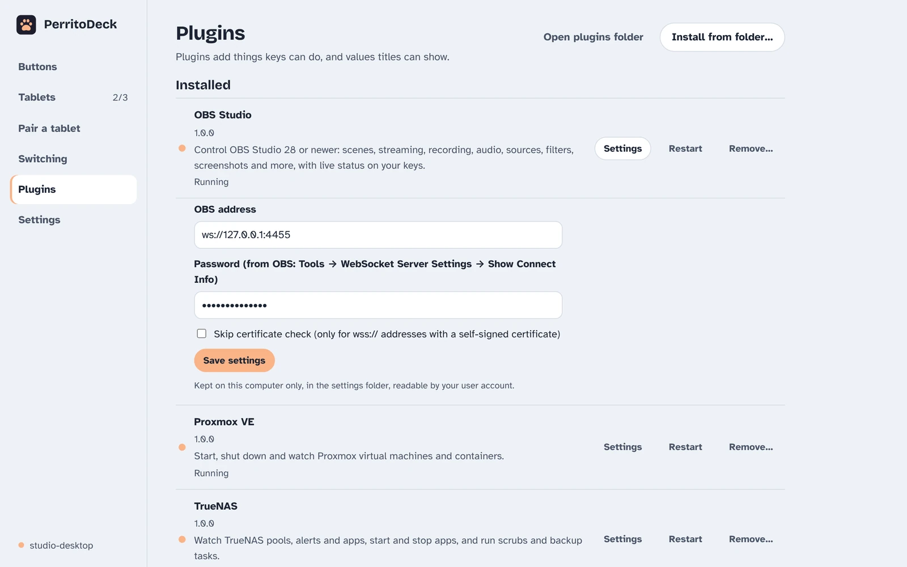

What PerritoDeck does
Lay out keys on your computer, press them on your tablet. Everything below works now; where something is experimental or only on some systems, it says so.
Keys that do things
- Hotkeys, recorded by pressing them, and typing text for you
- Media keys and the computer's volume
- Open websites, files, folders and programs, or run a command
- Several steps in one key, with pauses, or a random pick from a list
- Toggles with two looks, which can follow the real state, such as your mic
- Sliders for the volume, a light's brightness, an OBS audio source, or any program
- Pages, a Back key, and keys that switch to another profile
- Your own images and animated GIFs, colours and titles
The editor mirrors your tablet's grid, with copy and paste, undo, and a Try it button. Changes show up on the tablet as you make them. How to make buttons

Keys that show what's going on
Titles can carry live values that keep themselves up to date: the time and date, how busy the computer is, OBS's scene and whether you're live, any Home Assistant sensor, and dozens more from plugins, such as the weather, a timer, a server's response time or what's playing.
Toggles can follow a value too, so the mic key turns red when the mic is really muted, whoever muted it. Live values in the guide

The right keys for the app in front
Make a profile per job (streaming, coding, a game) and PerritoDeck switches to it when that app comes to the front, then back to your default when it goes. Each tablet can have its own rules. Works on Windows, macOS, and Linux on X11.
Profiles can be exported and shared as .perritoprofile files. Profiles in the guide

Several tablets, Wi-Fi or USB
Pair as many tablets and phones as you like with a QR code or a six-digit code. Each shows its own profile, and keys shared between them stay in step.
Perrito finds your computer on the local network by itself. Or plug in a USB cable: with Android's adb tool on the computer, the tablet connects over the cable, no Wi-Fi needed. Either way the connection is encrypted and tied to your computer when you pair. Getting started

Works with your other tools
- OBS Studio, built in: scenes, recording, streaming, audio sources, with their status on the keys
- Home Assistant (experimental), built in: run services, show any entity's state, dim lights with a slider
- 24 plugins in Python and Node.js: Twitch, Spotify, Philips Hue, Elgato Key Light, Proxmox, TrueNAS, timers, Wake-on-LAN and more. See them all
- Stream Deck plugins (experimental): many plugins made for the Elgato Stream Deck run as they are
- Bitfocus Companion (experimental): a tablet can be a Companion surface
What works with Stream Deck plugins and Companion, and what doesn't yet, is on the compatibility page. Writing your own plugin takes a few lines with the Python or Node.js SDK.

AI assistants, if you want them
Assistants that speak the Model Context Protocol, such as Claude Desktop and Claude Code, can look at your profiles and live values, and with your permission press keys and build pages for you: "make me a page for my video calls". It's off until you turn it on, and works only on this computer. AI assistants in the guide
Press keys
Press keys already on your profiles, and switch the profile a tablet shows.
Edit profiles
Make, change and remove keys, pages and profiles. You can undo their edits like your own.
Run actions
Run any action straight away, programs included. Only for an assistant you trust, while you need it.
Each permission is off until you tick it in Settings.
Private by design
Nothing leaves your desk
The tablet talks only to your computer. There's no account, no cloud service and no telemetry. The desktop app goes online only to fetch the plugin list or check for updates, and only when you ask it to. Privacy policy
Paired, encrypted, pinned
Pairing uses a one-time code. After that the tablet only accepts your computer's own certificate, and the computer only accepts tablets it paired, over TLS.
Headless if you like
A command-line host runs the same deck on a server or kiosk without a desktop, and fakedeck is a test client that needs no tablet at all.
Open source
The apps are Apache-2.0, the plugin SDKs and plugins MIT, and the protocol is documented, so you can check what it does or build on it. Source code
Not there yet
- Dials and touch strips as their own controls; sliders cover the main uses for now.
- The iPhone and iPad app is written but hasn't been built yet. The Mac version of the desktop app is written but hasn't been tried on a real Mac. Neither is in the first release.
- Linux packages: the first release is for Windows and Android, and on Linux you build it from source for now.
- Signed installers and store listings: the Windows installer isn't signed yet (what that means), and Perrito isn't on F-Droid or IzzyOnDroid yet.